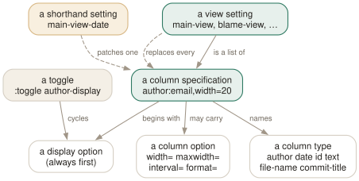

Day 11
Columns and view settings
A view is a list of column specifications, and each one is addressable.
By the end of today you can
- read a view setting and say what each column and column option does
- change one column of one view without rewriting the whole specification
- predict which columns a given view will accept, and read the error when it will not
Every view is a list of columns
The main view's layout is not hard-coded. It is a setting whose value is a list of column specifications, and once you can read one of those you can reshape every view tig has. This is the first of tig's three small languages; bindings and colours follow.
Here is the real default, as tig reports it:
set main-view = line-number:no,interval=5 \
id:no,color=no \
date:default,use-author=no,local=no,format="%Y-%m-%d" \
author:full \
committer:no \
commit-title:yes,graph=v2,refs=yes
Each item is type:display,option=value,option=value. The type comes first, then a colon, then a comma-separated list in which the first value is always the display option and the rest are named. A line ending in a backslash continues, which is the only way to keep these readable.

type:display,option=value items. The distinction that costs people their configuration is the dashed pair — a shorthand patches one column and preserves the rest, while a full list replaces everything you did not mention with its default.The column types, and which views accept them
There are eleven column types. Not every view takes every one:
author,committer- Display:
full,abbreviated,email,email-user. Pluswidthandmaxwidth. date- Display:
default,relative,relative-compact,custom. Plususe-author,local,format. id- The commit ID.
width, andcolorto tint it. commit-title- The subject.
graph,refs,overflow. file-name- Display:
auto,always. Plus widths. file-size- Display:
defaultorunits(12.2K). line-numberintervalcontrols how often a number is printed.mode,ref,status,text- File mode, ref name, status label, and the line itself.
Which view takes which is a short table in tigrc(5), and you do not need to memorise it because the error is explicit:
$ tig 2>&1 | head -1 # with 'set grep-view = author:full text'
tig warning: /home/you/.tigrc:1: The grep view does not support author column
Broadly: the history views (main, reflog, refs, stash) take the commit-shaped columns; the text views (diff, log, pager, stage, blob) take only line-number and text; and blame, tree, grep and status take the file-shaped ones.
Addressing one column: the shorthand that saves your config
Writing the whole list to change one thing is how people lose their commit graph. Appending a column name to the view setting addresses that column alone:
set main-view-date = relative # just the date column
set main-view-id = yes # just the ID column
set blame-view-line-number = no # just that, in the blame view
set tree-view-file-size = units
# and column options get the option name appended too
set main-view-date-format = "%a %d %b"
set main-view-id-width = 12
set main-view-commit-title-overflow = 72
Widths, and the two that behave oddly
width=0- Size the column to fit its content. The default for most columns.
width=20- Fixed width, truncated with the truncation delimiter —
~by default. maxwidth=15- Size to fit, but never wider than this. Accepts
20%of the view.
The odd one: on author and committer columns, a width between 1 and 10 does not truncate — it switches the column to initials. So author:full,width=8 shows ALovelace, not Ada Love. If you wanted truncation at eight characters, you cannot have it; use abbreviated deliberately instead.
Today's habit
Run :save-options /tmp/v once and keep the file. It is the complete, accurate, version-correct reference for every setting and binding your tig has — better than any documentation, because it is the running program describing itself.
Tomorrow: the second of tig's three languages, and the one that makes it yours.
New vocabulary
Commands
| Command | Does |
|---|---|
:toggle author-display | Cycle a column's display option from the prompt. |
:toggle commit-title-graph | Cycle a non-display column option. |
Options
| Option | Does |
|---|---|
main-view | Column list for the main view. reflog-view, refs-view and the rest follow the same shape. |
main-view-date | Shorthand: the date column of the main view alone. |
main-view-date-format | A strftime string, when the display mode is custom. |
main-view-id | Shorthand: show the commit ID column in the main view. |
tree-view-file-size | Shorthand: how the tree view shows sizes. |
Today's configappend to ~/.tigrc
Show the abbreviated commit ID in the main view. You copy hashes out of tig often enough that pressing X every session is wasted motion, and the column is narrow.
set main-view-id = yes
Highlight commit titles running past 72 characters, so that over-long subject lines are visible while reviewing rather than after pushing.
set main-view-commit-title-overflow = 72
Human-readable file sizes in the tree view: 12.2K rather than 12524.
set tree-view-file-size = units
tig reads this only at startup. Reload without quitting by binding :source ~/.tigrc to a key (Day 12), or check it with tig 2>&1 | head — errors arrive as tig warning: lines before the first view draws.
Drillsdo these in a real terminal, today
Self-check
Answer out loud first, then unfold.
You set main-view-date = relative on Day 7. Today you write a full set main-view = … line that includes date:relative. Your custom date format stops working. Why?
Because the two forms do different things. The shorthand patches one field of one column and leaves the rest of that column's options alone. A full list replaces the entire specification, so every option you did not mention reverts to its default.
You can watch it happen with :save-options. After the shorthand, the date column reads date:relative,use-author=no,local=no,format="%Y-%m-%d"; after a full list mentioning only date:relative, the format= has gone empty. Prefer shorthands unless you genuinely want to specify every column.
What is the difference between author:email and author:full,width=20, and what does width=5 do to an author column?
The first value in a specification is always the display option; everything after it is a named column option. So author:email sets the display mode, and author:full,width=20 sets the mode and a fixed width.
width=5 does something specific to author and committer columns: any width from 1 to 10 switches the column to initials rather than truncating the name. width=0 means “size to fit the content”, and maxwidth means “size to fit, but no wider than this” and accepts a percentage.
Why does set grep-view = author:full text fail when set main-view = author:full … is fine?
Because each view supports only the columns that make sense for what it lists. The grep view lists matching lines in files, and a line does not have an author — so it accepts file-name, line-number and text, and nothing else.
The error is unusually good: The grep view does not support author column. Compare it with the error for a bad column option, Unknown option `nosuchopt' for column author, which names the column instead. Between the two you can always tell whether you picked the wrong column or the wrong option.
Day 2's D and A keys, and the option menu, and the settings in this lesson — how are they related?
They are the same mechanism at three levels of ceremony. D is bound to :toggle date, which cycles the date column's display option. The option menu is a list of those same toggles. This lesson simply writes the resulting value down.
The naming rule is worth knowing: display options are <column>-display — as in :toggle author-display — while other column options are <column>-<option>, as in :toggle commit-title-graph. That is why Day 2's graph toggle had such an odd-looking name.
Cheat sheet
Column specifications. The last two lines are the distinction that matters.
set <view>-view = type:display,option=value type:display …
types author committer date id commit-title file-name file-size
line-number mode ref status text
common width=0 (fit) width=20 (fixed) maxwidth=15 or 20%
date default|relative|relative-compact|custom + format= use-author= local=
author full|abbreviated|email|email-user (width 1-10 = initials!)
title graph=v2|v1|no refs= overflow=72
set main-view-date = relative # SHORTHAND: patches one column
set main-view = date:relative … # FULL LIST: replaces all the others
Everything through Day 11
Keys
| Key | Does |
|---|---|
| m | Open the main view — the one-line-per-commit list. |
| d | Open the diff view for the selected commit. |
| s | Open the status view: the working tree. S does the same. |
| h | Open the help view: every binding that is live right now. |
| q | Close this view and fall back to the one underneath. Quits if it is the last. |
| Q | Quit immediately, however deep the stack. |
| R | Reload the current view by re-running its git command. |
| v | Show the version — and prove which build you are on. |
| z | Stop all background loading. For when you opened a 200,000-commit history. |
| D | Cycle the date column: default, relative, compact, custom, hidden. |
| A | Cycle the author column: full, abbreviated, email, user, hidden. |
| X | Show or hide the abbreviated commit ID column. |
| G | Cycle the graph in the main view: v2, v1, off. |
| F | In the main view, show or hide the ref labels. |
| # | Show or hide line numbers. |
| ~ | Switch the line graphics between ASCII and the drawing characters. |
| o | Open the option menu: the same toggles, with their current values. |
| jk | Move the cursor down and up. Arrow keys work too, with a caveat on Day 3. |
| Enter | Open the selected line. From the main view, splits and shows the diff. |
| Tab | Move focus to the other view in a split. |
| UpDown | Move to the previous/next entry — in the parent view, even from the child. |
| JK | Same as the arrow keys: next and previous entry. |
| O | Maximise the focused view to fill the display. |
| < | Go back to the previous view state. |
| , | Move to the parent: the parent directory, or the parent commit. |
| Space- | Page down and page up. |
| C-dC-u | Half a page down and up. |
| ] | Increase the diff context by one line. |
| [ | Decrease the diff context by one line. |
| @ | Jump to the next chunk header. Implemented as a search — see today's gotcha. |
| % | Toggle the file filter: show the whole commit, not just the file you came from. |
| W | Toggle whitespace-insensitive diffing. |
| $ | Highlight commit-title text past the conventional width. |
| / | Search forwards. Prompts for a regexp. |
| ? | Search backwards. |
| n | Next match. N for the previous one. |
| : | Open the prompt. |
| H | Jump to the HEAD commit, in the main view. |
| u | Stage or unstage: the file in the status view, the chunk in the stage view. |
| 1 | Stage or unstage the single line under the cursor. |
| 2 | Stage or unstage part of a chunk: from here to the end of it. |
| \ | Split the current chunk into smaller chunks. |
| ! | Revert: throw away the chunk or file under the cursor. Prompts first. |
| M | Resolve an unmerged file with git mergetool. |
| C | Commit. Runs git commit in the foreground, in the status view. |
| t | Open the tree view at the current revision. |
| f | Open the blob view: the contents of the selected file. |
| b | Open the blame view for the selected file. |
| e | Open the file in your editor, at the line under the cursor. |
| r | Refs view: branches, remotes and tags. |
| y | Stash view: the stash stack. |
| L | Reflog view: where HEAD has been. |
| g | Grep view: search file contents. |
| C(refs,reflog) | Check out the branch under the cursor. Prompts first. |
| !(refs,stash,reflog) | Delete the branch, drop the stash, or reset --hard. All prompt first. |
| A(stash) | Apply the selected stash, keeping the entry. |
| P(stash) | Pop it: apply and remove the entry. |
Commands
| Command | Does |
|---|---|
tig | Open the main view for the current branch. |
tig status | Start in the status view instead. |
tig -C <path> | Run as if started in path. |
tig -v | Print the version and exit. Also reveals the optional features built in. |
tig show <rev> | Open a commit directly in the diff view. |
tig --word-diff=plain | Word-level rather than line-level diffing. |
:42 | Jump to line 42 of this view. |
:2f12bcc | Jump to that commit. |
:goto <rev> | Jump to a revision: a branch, a tag, HEAD~3, %(commit)^2. |
:!git <cmd> | Run a git command and show the output in the pager view. |
:edit | Run an action by name. Any action name works here. |
:q | Run the binding for a key. Same as pressing q. |
:echo <text> | Print a line in the status window. |
:save-display <file> | Write the current screen to a file. |
:set <name> = <value> | Change a setting for this session. |
:toggle <name> | Cycle a setting. :toggle diff-context +3 steps by three. |
:source <file> | Read a config file now. Later lines win over earlier ones. |
:save-options <file> | Write every current setting and binding to a file. |
tig blame <file> | Start in the blame view for a file. |
tig blame <rev> -- <file> | Blame the file as it was at that revision. |
tig blame -C <file> | Blame with copy detection for one run. |
tig show <rev>:<path> | Show a file's contents at a revision. |
tig refs | Start in the refs view. |
tig stash | Start in the stash view. |
tig reflog | Start in the reflog view. |
tig grep <pattern> | Start in the grep view. Takes git grep options. |
tig refs --branches | Limit the refs view to branches. |
tig <rev> | Start the main view at a revision instead of HEAD. |
tig a..b | Commits reachable from b but not a. |
tig b ^a | The same thing, written as a negation. |
tig --all | Every ref, as if all of refs/ were on the command line. |
tig -- <path> | Only commits touching that path. -- ends option parsing. |
tig -n20 --since=1.month | Limit by count and by date. |
tig +42 | Open with line 42 selected. |
git log -p | tig | Pager mode: colourise and navigate any git output. |
tig --stdin | Read a list of commit IDs from stdin. |
:toggle author-display | Cycle a column's display option from the prompt. |
:toggle commit-title-graph | Cycle a non-display column option. |
Options
| Option | Does |
|---|---|
show-changes | Whether the working-tree rows appear at all. Default yes. |
show-untracked | Whether the untracked row appears. Default yes. |
reference-format | How refs are wrapped. Default [branch] {remote} <tag> ~replace~. |
split-view-height | Height of the bottom view in a stacked split. Default 67%. |
split-view-width | Width of the right-hand view in a side-by-side split. Default 50%. |
vertical-split | Stacked or side by side. Default auto. |
focus-child | Whether opening a child view moves the focus into it. Default yes. |
diff-context | Context lines around each change. Default 3. |
diff-options | Extra options for the diff view's git show. |
ignore-space | Whitespace handling: no (default), all, some, at-eol. |
diff-highlight | Run git's diff-highlight to mark intra-line changes. Off by default. |
diff-indicator | Show the leading +/- signs. Default yes. |
ignore-case | Search case handling: no (default), yes, smart-case. |
wrap-search | Wrap around the ends of the view. Default yes. |
history-size | Lines kept in ~/.tig_history. Default 500, 0 disables. |
status-show-untracked-files | Show untracked files. Default yes. |
status-show-untracked-dirs | Show the contents of untracked directories. Default yes. |
mailmap | Apply .mailmap. Default yes, whatever tigrc(5) says. |
blame-options | Default options for git blame. Empty by default. |
recurse-tree | Show every file recursively in the tree view. Default no. |
editor-line-number | Pass +<line> to the editor. Default yes. |
grep-view | Columns of the grep view. Adding file-name gives the git grep shape. |
main-options | Default options for the main view's git log. |
log-options | Default options for the log view. Default --cc --stat. |
main-view | Column list for the main view. reflog-view, refs-view and the rest follow the same shape. |
main-view-date | Shorthand: the date column of the main view alone. |
main-view-date-format | A strftime string, when the display mode is custom. |
main-view-id | Shorthand: show the commit ID column in the main view. |
tree-view-file-size | Shorthand: how the tree view shows sizes. |